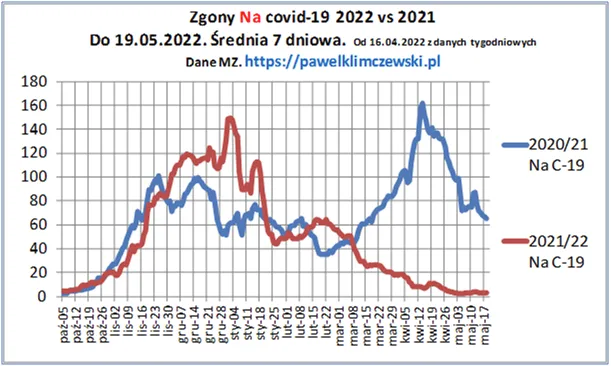
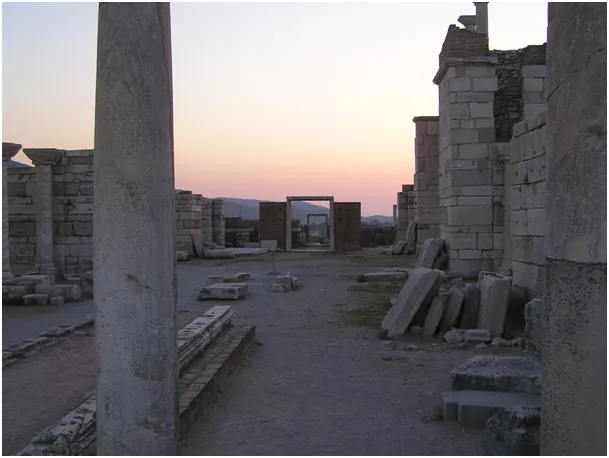

“Strzeżcie się, żeby was nie zwiedziono.” Łk, 21, 8-11
Z kronikarskiego obowiązku przypominam, że mamy obecnie ok. 3,4 zgonu na covid na dobę. Liczby ułamkowe w tej sprawie mamy od połowy kwietnia, gdy MZ raportuje tylko raz w tygodni sumę zgonów. Codzienne przypominanie tej sprawy to byłby masochizm administracji w obliczu dziennej normy dla Polski ok. 1250 zgonów na dobę. Zamieszczam ten wykres przy okazji doniesień o nowym patogenie. Będę omijał wszystkie źródła, które o tym się rozpisują. Bąble na skórze itp. to jad sączony do umysłów przestraszonych ludzi.

Tak się składa, że taki obrazek wpisuje się dosłownie w apokaliptyczne wizje i ludzie to eskalują. Mam specjalne nabożeństwo do postaci autora apokalipsy, św. Jana Ewangelisty i szczególnej rozwadze polecam słowa, aby "nie dać się zwieść !". Św. Jan poza apokalipsą pisał też listy, niedługie..., polecam gorąco. Był jednym z apostołów, który dożył późnej starości i zmarł śmiercią naturalną ok. roku 108. Jego ziemski grób to ruina wśród wykopalisk w tureckim dziś Selcuku tuż obok Efezu.

Paweł Klimczewski